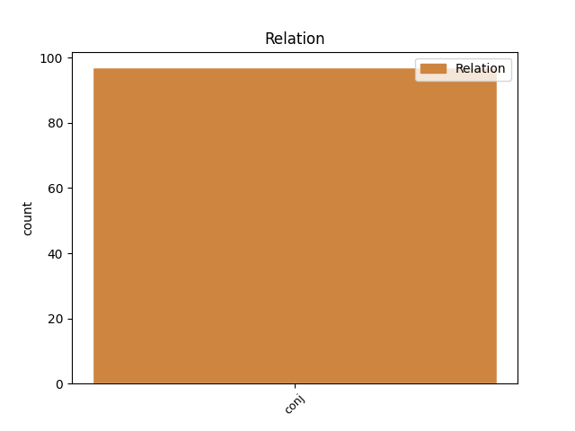
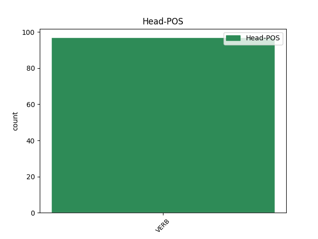
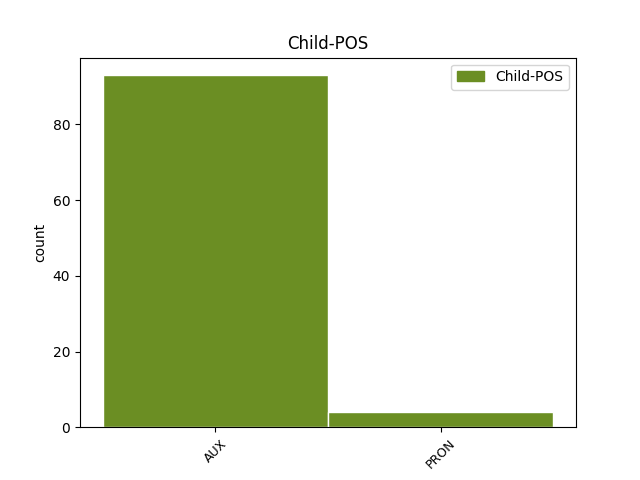

Distribution of features within this leaf



Agreement Rules sorted by frequency.
- When the dependent token is the conjunct(conj) of the head token, and the head token is VERB and the dependent token is AUX.
1 ה _ _ _ _ 0 _ _ _
2 שער _ _ _ _ 0 _ _ _
3 של _ _ _ _ 0 _ _ _
4 ויאלי _ _ _ _ 0 _ _ _
5 ש _ _ _ _ 0 _ _ _
6 נבע _ _ _ _ 0 _ _ _
7 מ _ _ _ _ 0 _ _ _
8 טעות _ _ _ _ 0 _ _ _
9 שוער _ _ _ _ 0 _ _ _
10 , _ _ _ _ 0 _ _ _
11 הובקע הובקע VERB VERB Gender=Masc|HebBinyan=HUFAL|Number=Sing|Person=3|Tense=Past|Voice=Pass 0 _ _ _
12 12 _ _ _ _ 0 _ _ _
13 דקות _ _ _ _ 0 _ _ _
14 אחר _ _ _ _ 0 _ _ _
15 - _ _ _ _ 0 _ _ _
16 כך _ _ _ _ 0 _ _ _
17 ו _ _ _ _ 0 _ _ _
18 ה _ _ _ _ 0 _ _ _
19 - _ _ _ _ 0 _ _ _
20 04 _ _ _ _ 0 _ _ _
21 היה _ AUX AUX Gender=Masc|Number=Sing|Person=3|Polarity=Pos|Tense=Past|VerbType=Cop 11 conj _ _
22 ב _ _ _ _ 0 _ _ _
23 בעיטת _ _ _ _ 0 _ _ _
24 11 _ _ _ _ 0 _ _ _
25 של _ _ _ _ 0 _ _ _
26 מארקו _ _ _ _ 0 _ _ _
27 בראנקה _ _ _ _ 0 _ _ _
28 . _ _ _ _ 0 _ _ _
1 היא _ _ _ _ 0 _ _ _
2 נישאה נישא VERB VERB Gender=Fem|HebBinyan=NIFAL|Number=Sing|Person=3|Tense=Past|Voice=Mid 0 _ _ _
3 ו _ _ _ _ 0 _ _ _
4 היא הוא PRON PRON Gender=Fem|Number=Sing|Person=3|PronType=Prs 2 conj _ _
5 כבר _ _ _ _ 0 _ _ _
6 אם _ _ _ _ 0 _ _ _
7 ל _ _ _ _ 0 _ _ _
8 תינוק _ _ _ _ 0 _ _ _
9 בן _ _ _ _ 0 _ _ _
10 שנה _ _ _ _ 0 _ _ _
11 ו _ _ _ _ 0 _ _ _
12 חצי _ _ _ _ 0 _ _ _
13 . _ _ _ _ 0 _ _ _
Disagree Examples:
1 ה _ _ _ _ 0 _ _ _
2 פלשתינאים _ _ _ _ 0 _ _ _
3 ש _ _ _ _ 0 _ _ _
4 ביצעו _ _ _ _ 0 _ _ _
5 רציחות _ _ _ _ 0 _ _ _
6 ב _ _ _ _ 0 _ _ _
7 ה_ _ _ _ _ 0 _ _ _
8 בקעה _ _ _ _ 0 _ _ _
9 ו _ _ _ _ 0 _ _ _
10 ב _ _ _ _ 0 _ _ _
11 אשקלון _ _ _ _ 0 _ _ _
12 ו _ _ _ _ 0 _ _ _
13 ניסו _ _ _ _ 0 _ _ _
14 לרצוח _ _ _ _ 0 _ _ _
15 שתי _ _ _ _ 0 _ _ _
16 חיילות _ _ _ _ 0 _ _ _
17 ב _ _ _ _ 0 _ _ _
18 צומת _ _ _ _ 0 _ _ _
19 אלונים _ _ _ _ 0 _ _ _
20 פעלו פעל VERB VERB Gender=Fem,Masc|HebBinyan=PAAL|Number=Plur|Person=3|Tense=Past|Voice=Act 0 _ _ _
21 גם _ _ _ _ 0 _ _ _
22 הם _ _ _ _ 0 _ _ _
23 על _ _ _ _ 0 _ _ _
24 דעת _ _ _ _ 0 _ _ _
25 עצמם _ _ _ _ 0 _ _ _
26 ; _ _ _ _ 0 _ _ _
27 ב _ _ _ _ 0 _ _ _
28 אותו _ _ _ _ 0 _ _ _
29 אופן _ _ _ _ 0 _ _ _
30 עלולים עלול AUX AUX Gender=Masc|Number=Plur|Person=1,2,3|VerbType=Mod 20 conj _ _
31 " _ _ _ _ 0 _ _ _
32 לפעול _ _ _ _ 0 _ _ _
33 " _ _ _ _ 0 _ _ _
34 יהודים _ _ _ _ 0 _ _ _
35 כדי _ _ _ _ 0 _ _ _
36 לתת _ _ _ _ 0 _ _ _
37 פורקן _ _ _ _ 0 _ _ _
38 ל _ _ _ _ 0 _ _ _
39 רגש_ _ _ _ _ 0 _ _ _
40 _של_ _ _ _ _ 0 _ _ _
41 _הם _ _ _ _ 0 _ _ _
42 ה _ _ _ _ 0 _ _ _
43 נסערים _ _ _ _ 0 _ _ _
44 , _ _ _ _ 0 _ _ _
45 ב _ _ _ _ 0 _ _ _
46 ביצוע _ _ _ _ 0 _ _ _
47 פיגוע _ _ _ _ 0 _ _ _
48 ש _ _ _ _ 0 _ _ _
49 תנועת _ _ _ _ 0 _ _ _
50 " _ _ _ _ 0 _ _ _
51 כך _ _ _ _ 0 _ _ _
52 " _ _ _ _ 0 _ _ _
53 לא _ _ _ _ 0 _ _ _
54 יזמה _ _ _ _ 0 _ _ _
55 או _ _ _ _ 0 _ _ _
56 אישרה _ _ _ _ 0 _ _ _
57 . _ _ _ _ 0 _ _ _
1 ו _ _ _ _ 0 _ _ _
2 אם _ _ _ _ 0 _ _ _
3 ו _ _ _ _ 0 _ _ _
4 כאשר _ _ _ _ 0 _ _ _
5 נזכה זכה VERB VERB Gender=Fem,Masc|HebSource=ConvUncertainHead|Number=Plur|Person=1|Tense=Fut 0 _ _ _
6 ב _ _ _ _ 0 _ _ _
7 ה_ _ _ _ _ 0 _ _ _
8 שלום _ _ _ _ 0 _ _ _
9 ה _ _ _ _ 0 _ _ _
10 מיוחל _ _ _ _ 0 _ _ _
11 , _ _ _ _ 0 _ _ _
12 ימני _ _ _ _ 0 _ _ _
13 או _ _ _ _ 0 _ _ _
14 שמאלני _ _ _ _ 0 _ _ _
15 , _ _ _ _ 0 _ _ _
16 ו _ _ _ _ 0 _ _ _
17 ה _ _ _ _ 0 _ _ _
18 ילדים _ _ _ _ 0 _ _ _
19 של _ _ _ _ 0 _ _ _
20 היום _ _ _ _ 0 _ _ _
21 יהיו היה AUX AUX Gender=Fem,Masc|Number=Plur|Person=3|Polarity=Pos|Tense=Fut|VerbType=Cop 5 conj _ _
22 ה _ _ _ _ 0 _ _ _
23 זקנים _ _ _ _ 0 _ _ _
24 של _ _ _ _ 0 _ _ _
25 מחר _ _ _ _ 0 _ _ _
26 , _ _ _ _ 0 _ _ _
27 האם _ _ _ _ 0 _ _ _
28 ה _ _ _ _ 0 _ _ _
29 טקסים _ _ _ _ 0 _ _ _
30 מרובי _ _ _ _ 0 _ _ _
31 ה _ _ _ _ 0 _ _ _
32 שירים _ _ _ _ 0 _ _ _
33 ה _ _ _ _ 0 _ _ _
34 עצובים _ _ _ _ 0 _ _ _
35 ו _ _ _ _ 0 _ _ _
36 קטעי _ _ _ _ 0 _ _ _
37 ה _ _ _ _ 0 _ _ _
38 קריאה _ _ _ _ 0 _ _ _
39 ו _ _ _ _ 0 _ _ _
40 הורדת _ _ _ _ 0 _ _ _
41 ה _ _ _ _ 0 _ _ _
42 דגל _ _ _ _ 0 _ _ _
43 ל _ _ _ _ 0 _ _ _
44 חצי _ _ _ _ 0 _ _ _
45 ה _ _ _ _ 0 _ _ _
46 תורן _ _ _ _ 0 _ _ _
47 ו _ _ _ _ 0 _ _ _
48 קדיש _ _ _ _ 0 _ _ _
49 ו _ _ _ _ 0 _ _ _
50 עוד _ _ _ _ 0 _ _ _
51 כהנה _ _ _ _ 0 _ _ _
52 ו _ _ _ _ 0 _ _ _
53 כהנה _ _ _ _ 0 _ _ _
54 סמלים _ _ _ _ 0 _ _ _
55 יהיו _ _ _ _ 0 _ _ _
56 בגדר _ _ _ _ 0 _ _ _
57 סגידה _ _ _ _ 0 _ _ _
58 ביזארית _ _ _ _ 0 _ _ _
59 ? _ _ _ _ 0 _ _ _
1 לאורך _ _ _ _ 0 _ _ _
2 כל _ _ _ _ 0 _ _ _
3 ה _ _ _ _ 0 _ _ _
4 דרך _ _ _ _ 0 _ _ _
5 הקפדתי הקפיד VERB VERB Gender=Fem,Masc|HebBinyan=HIFIL|Number=Sing|Person=1|Tense=Past|Voice=Act 0 _ _ _
6 לא _ _ _ _ 0 _ _ _
7 לדכא _ _ _ _ 0 _ _ _
8 את _ _ _ _ 0 _ _ _
9 ה _ _ _ _ 0 _ _ _
10 רוח _ _ _ _ 0 _ _ _
11 , _ _ _ _ 0 _ _ _
12 ללא _ _ _ _ 0 _ _ _
13 פאתוס _ _ _ _ 0 _ _ _
14 מיותר _ _ _ _ 0 _ _ _
15 , _ _ _ _ 0 _ _ _
16 אבל _ _ _ _ 0 _ _ _
17 להרטיט _ _ _ _ 0 _ _ _
18 את _ _ _ _ 0 _ _ _
19 ה _ _ _ _ 0 _ _ _
20 נפש _ _ _ _ 0 _ _ _
21 זה _ _ _ _ 0 _ _ _
22 היה היה AUX AUX Gender=Masc|Number=Sing|Person=3|Polarity=Pos|Tense=Past|VerbType=Cop 5 conj _ _
23 תפקיד_ _ _ _ _ 0 _ _ _
24 _של_ _ _ _ _ 0 _ _ _
25 _אני _ _ _ _ 0 _ _ _
26 , _ _ _ _ 0 _ _ _
27 ו _ _ _ _ 0 _ _ _
28 אני _ _ _ _ 0 _ _ _
29 הזדהיתי _ _ _ _ 0 _ _ _
30 עם_ _ _ _ _ 0 _ _ _
31 _הוא _ _ _ _ 0 _ _ _
32 , _ _ _ _ 0 _ _ _
33 ו _ _ _ _ 0 _ _ _
34 זה _ _ _ _ 0 _ _ _
35 תוכן _ _ _ _ 0 _ _ _
36 סיפור_ _ _ _ _ 0 _ _ _
37 _של_ _ _ _ _ 0 _ _ _
38 _אני _ _ _ _ 0 _ _ _
39 . _ _ _ _ 0 _ _ _
1 אני _ _ _ _ 0 _ _ _
2 מעריך _ _ _ _ 0 _ _ _
3 ש _ _ _ _ 0 _ _ _
4 קיימות _ _ _ _ 0 _ _ _
5 שתי _ _ _ _ 0 _ _ _
6 אפשרויות _ _ _ _ 0 _ _ _
7 : _ _ _ _ 0 _ _ _
8 ה _ _ _ _ 0 _ _ _
9 אפשרות _ _ _ _ 0 _ _ _
10 ה _ _ _ _ 0 _ _ _
11 אחת _ _ _ _ 0 _ _ _
12 , _ _ _ _ 0 _ _ _
13 ש _ _ _ _ 0 _ _ _
14 ל_ _ _ _ _ 0 _ _ _
15 _היא _ _ _ _ 0 _ _ _
16 אני _ _ _ _ 0 _ _ _
17 מייחס _ _ _ _ 0 _ _ _
18 את _ _ _ _ 0 _ _ _
19 מירב _ _ _ _ 0 _ _ _
20 ה _ _ _ _ 0 _ _ _
21 סיכויים _ _ _ _ 0 _ _ _
22 , _ _ _ _ 0 _ _ _
23 היא _ _ _ _ 0 _ _ _
24 ש _ _ _ _ 0 _ _ _
25 ב _ _ _ _ 0 _ _ _
26 אותה _ _ _ _ 0 _ _ _
27 מידה _ _ _ _ 0 _ _ _
28 ש _ _ _ _ 0 _ _ _
29 ה _ _ _ _ 0 _ _ _
30 רב _ _ _ _ 0 _ _ _
31 כהנא _ _ _ _ 0 _ _ _
32 ריסן _ _ _ _ 0 _ _ _
33 אחדים _ _ _ _ 0 _ _ _
34 מ _ _ _ _ 0 _ _ _
35 ה _ _ _ _ 0 _ _ _
36 חברים _ _ _ _ 0 _ _ _
37 ה _ _ _ _ 0 _ _ _
38 נמרצים _ _ _ _ 0 _ _ _
39 יותר _ _ _ _ 0 _ _ _
40 ב _ _ _ _ 0 _ _ _
41 תנועה_ _ _ _ _ 0 _ _ _
42 _של_ _ _ _ _ 0 _ _ _
43 _הוא _ _ _ _ 0 _ _ _
44 , _ _ _ _ 0 _ _ _
45 עכשיו _ _ _ _ 0 _ _ _
46 יחסר חסר VERB VERB Gender=Masc|Number=Sing|Person=3|Tense=Fut 0 _ _ _
47 ה _ _ _ _ 0 _ _ _
48 ריסון _ _ _ _ 0 _ _ _
49 , _ _ _ _ 0 _ _ _
50 ו _ _ _ _ 0 _ _ _
51 עשויים עשוי AUX AUX Gender=Masc|Number=Plur|Person=1,2,3|VerbType=Mod 46 conj _ _
52 להיעשות _ _ _ _ 0 _ _ _
53 מעשים _ _ _ _ 0 _ _ _
54 ש _ _ _ _ 0 _ _ _
55 ב _ _ _ _ 0 _ _ _
56 עקבה_ _ _ _ _ 0 _ _ _
57 _של_ _ _ _ _ 0 _ _ _
58 _הם _ _ _ _ 0 _ _ _
59 ייעצרו _ _ _ _ 0 _ _ _
60 אנשים _ _ _ _ 0 _ _ _
61 ו _ _ _ _ 0 _ _ _
62 אולי _ _ _ _ 0 _ _ _
63 גם _ _ _ _ 0 _ _ _
64 ייאסרו _ _ _ _ 0 _ _ _
65 . _ _ _ _ 0 _ _ _
1 אבל _ _ _ _ 0 _ _ _
2 גם _ _ _ _ 0 _ _ _
3 שני _ _ _ _ 0 _ _ _
4 אלה _ _ _ _ 0 _ _ _
5 מועדים מעד VERB VERB Gender=Masc|Number=Plur|Person=1,2,3|VerbForm=Part 0 _ _ _
6 לפעמים _ _ _ _ 0 _ _ _
7 , _ _ _ _ 0 _ _ _
8 ו _ _ _ _ 0 _ _ _
9 בעיה_ _ _ _ _ 0 _ _ _
10 _של_ _ _ _ _ 0 _ _ _
11 _הם _ _ _ _ 0 _ _ _
12 היא הוא AUX AUX Gender=Fem|Number=Sing|Person=3|Polarity=Pos|VerbForm=Part|VerbType=Cop 5 conj _ _
13 בעיית _ _ _ _ 0 _ _ _
14 ה _ _ _ _ 0 _ _ _
15 חומר _ _ _ _ 0 _ _ _
16 ה _ _ _ _ 0 _ _ _
17 צפוי _ _ _ _ 0 _ _ _
18 , _ _ _ _ 0 _ _ _
19 ה _ _ _ _ 0 _ _ _
20 מוכר _ _ _ _ 0 _ _ _
21 ו _ _ _ _ 0 _ _ _
22 ה _ _ _ _ 0 _ _ _
23 שחוק _ _ _ _ 0 _ _ _
24 . _ _ _ _ 0 _ _ _